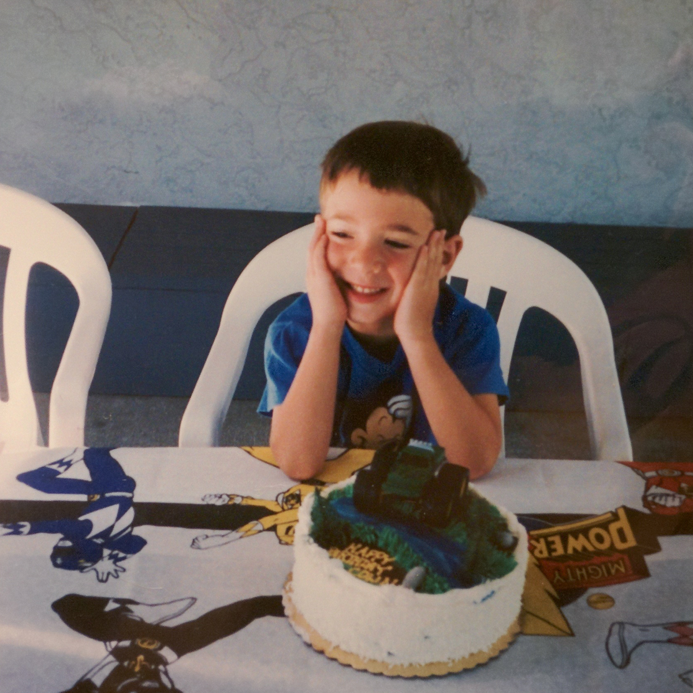

Whether it's working with kids or teens, building technology for non-profits or startups, running a bikeshare or a darkroom, interning with the Whitney Museum of American Art or The Museum of Modern Art, I've tried to humanize the systems I've been a part of. I graduated in 2013 from Grinnell College with a BA in Computer Science and a concentration in Neuroscience, and from Columbia University in 2017 with an MA in Art and Art Education.
Currently I live in New York, working in Digital Media at the Whitney Museum of American Art.